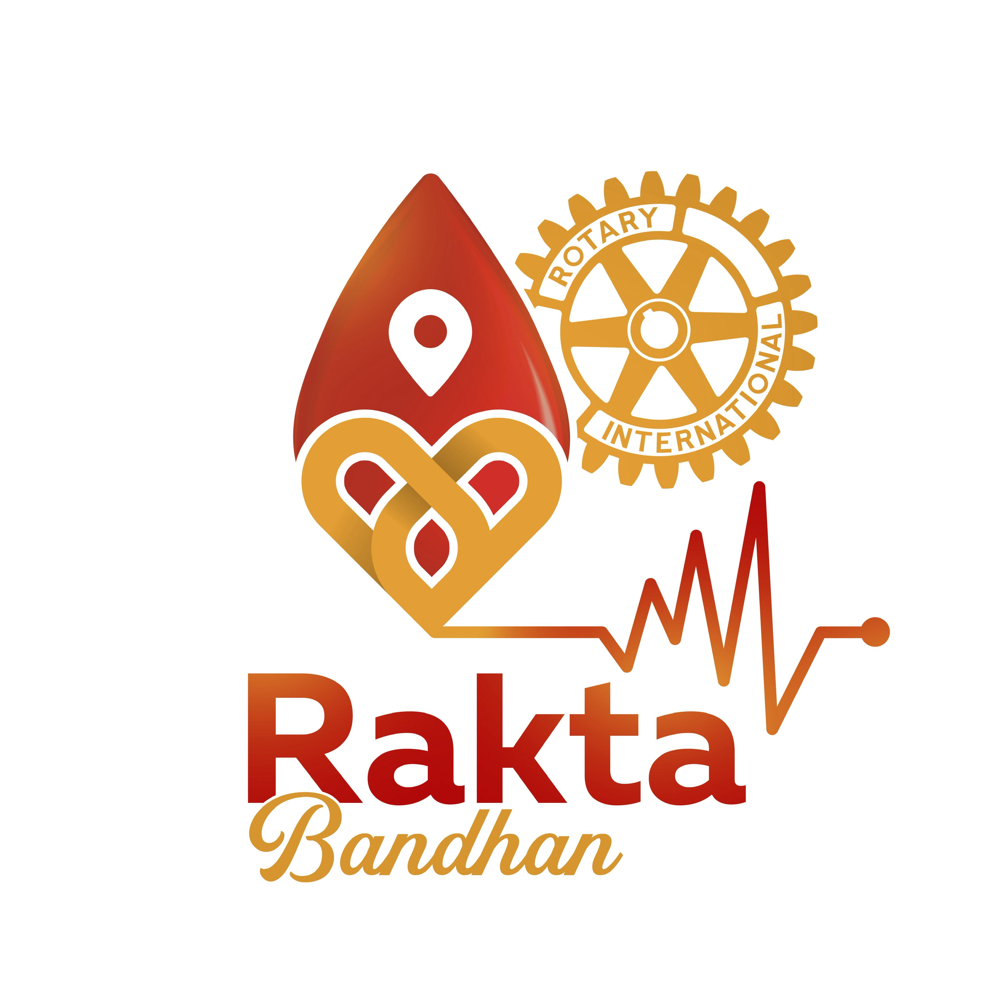

Final visual design — approved direction, handoff to implementation
Rakta Bandhan
A human blood donation community — four tabs, one visual language
Colour sourceDerived by pixel sample from the supplied logoScopeDesign only — no Flutter written, repository untouchedBackendUnchanged: backend.dart, Firebase, Firestore, auth, rulesScreens30 screens + component system · one coherent product

Source of truth — supplied asset, unmodified
The palette below is not chosen; it is measured. Every colour in the product system is sampled from the logo or derived as a tonal step of a sampled colour — the vermilion of the droplet, the crimson of the wordmark, the gold of the interlocked heart and the Rotary wheel, and the red-to-orange run of the ECG line. The logo's own relationship between the three — red carries urgency, orange carries warmth, gold carries recognition and community — becomes the product's colour logic.
Brand red #B81E14 wordmark, droplet body
Vermilion #C9481E droplet highlight, ECG
Orange #D9631F ECG tail, gradient run
Brand gold #E0A030 heart, Rotary wheel, script
Ember #6E1109 deepest droplet shadow
A note on this document. The presentation layer you are reading — the blueprint frames, registration marks, condensed headings and grid — is the Industry system this workspace is bound to. Everything inside a phone frame is the Rakta Bandhan product, and it uses only the logo-derived palette above. The document's steel accent never appears in the product.
01
The design system
Tokens 01
Colour
Three brand roles, each on a 100–900 ramp so tints, hovers, pressed states and text-on-tint are never invented per screen. Red is the action and the urgency. Orange is the warmth and the bridge. Gold is community, recognition and everything Rotary. Neutrals are warm-biased so the ground looks like paper, not grey.
Red — action, urgency, the blood itself
100200300400500600 base700800900
600 #B81E14 is the primary button, the selected droplet, the urgent edge. 700 for pressed. 800/900 for text on red tints and for the ember field.
Orange — warmth, progress, the bridge
100200300400500600 base700800900
Impact fills, progress arcs, the reaction state, the second stop of every brand gradient. Never a second primary button.
Gold — community, recognition, Rotary
100200300400500 brand600700800900
Community identity, badges, leaderboard, certificates, What's New, sponsor slots. 500 is the logo's own gold; 700+ for gold text on light ground.
Warm neutrals — paper, ink, edges
surfacegroundsandborderdisabledmutedink-2—ink
Ground #FCF8F2, surface white, ink #241413. One border and one divider value for the whole app.
Success #3F6B34 on #E8F0DF deliberately warm-leaning olive so it sits with gold
Warning #9A6510 on #FBF0D9 the gold ramp doing double duty — no new hue
Error #A81C13 on #FCEBE6 red-700, distinguished by icon and copy
Disabled
Disabled #C2B2A9 on #F2EAE0 never opacity on a filled button
Ember field one token, four moments only
Brand run the logo's own red→orange→gold; hairlines and rules only, never behind text
Tokens 02
Type — two voices, seven steps
Newsreader — already in the build — carries anything human: a name, a count, a headline, a story, a date. Barlow carries everything structural. Nothing below 12px. Sentence case throughout; caps only for the 12px eyebrow.
DisplayWarriorNewsreader 30–48 / 500
HeadlineWho needs blood?Newsreader 22–27 / 500
StoryToday was my first donation.Newsreader 17 / 400
TitleRequest detailsBarlow 17 / 600
BodySion Hospital, MumbaiBarlow 15 / 400
Meta2.4 km · 12 min agoBarlow 13 / 400
EyebrowSOMEONE NEEDS YOUBarlow 12 / 600
Tokens 03
Space, radius, elevation
4px base: 4 · 8 · 12 · 16 · 20 · 24 · 32 · 40. Screen gutter is 20px everywhere, no exceptions. Three radii replace the twelve in the current build.
12 controls, inputs, chips, tiles
20 raised objects, sheets, cards
full discs, droplets, pills only
Three planes, and they mean something
Ground the page: rules, rows, labels, eyebrows. No fills.
Raised one object per screen — the live thing.
Field peaks: consent, search, match, certificate.
Icons: Lucide, 1.5 stroke, 18px inline / 22px standalone / 24px in the tab bar. Icons take the colour of the text they belong to; red only when the icon itself is the emphasis.
Tokens 04
Components — one implementation each
Every object below has exactly one visual definition and one set of sizes. Where the current build has five versions of an idea — avatars, ring markers, section labels, progress bars, impact trails — this is the version that survives.
Buttons — one primary per screen
Accept & help
Secondary
Text action
Disabled
Droplet & identity disc
O+
O+
AG
O+
W
Red tint = private Gold tint = community
Status, pulse, connector
CriticalUrgentNormalMatchedPending
Available to donate
AG
2.4 km
RD
Impact trail — one horizon, everywhere
4
donations · 10-unit horizon
The current build draws this at three different horizons on three screens. One horizon of ten, one droplet size, everywhere it appears.
Ring field — the signature component
2 km
5 km
10 km
RDO+
AK
O+
YOUR AREA
nearestwithin rangefarther, anonymous
Every marker is placed by projecting a real bearing and a real distance — the discs above sit at 38°/2.4 km, 168°/4.1 km, 292°/8.6 km and 214°/9.2 km, and nothing is positioned by hand. Emphasis falls off with distance: the nearest donor is a 34px gold disc with a restrained halo, mid-range donors are 26px, and donors beyond the active ring drop to quiet 18px dots with no initials. A blood-group droplet appears only where that donor opted to expose it. The active range ring is the one solid hairline and carries the only bold label; the rest are dotted and near-invisible. One composition serves Find, Matching and donor discovery — the range, the sweep extent and the marker set are the only things that change.
Input, chip, grouped row
Hospital, area or landmark
Sion Hospital|
AllO+A+
Donation history›
Certificates›
Rules 01
Imagery — frames, never drops
No stock photography, no invented portraits, no fabricated artwork. Four frames, each with a fixed aspect and crop, and every image in the product goes through one of them.
Story frame 4:3, user photo
Field frame art at low opacity behind ember
Campaign frame 16:9 crop, gold ground
Empty-state frame supplied illustration only
Where imagery does not exist yet — and for most of this product it does not — the composition carries itself on type, the droplet vocabulary, brand texture and identity discs. Every such slot in the screens ahead is marked as a placeholder rather than filled with a weak drawing. The hands-and-heart artwork is not redrawn anywhere in this design.
Rules 02
Motion — six moments
Three durations on one curve: 160ms for controls, 320ms for transitions, 700ms+ for brand moments. Everything else takes the platform default.
Request arrivesthe card rises 12px into place, urgency edge draws left to right
Acceptingdroplet fills, connector draws between the two discs, screen becomes the field
Searchingring sweep advances one ring per real ladder stage — never a loop
Availabilitythe pulse starts or stops; the disc's ring warms or cools
Impact changesone droplet fills along the trail, the count rolls up
Eligible againthe cooldown arc completes and releases into the available pulse
Sponsor slot — a defined module, off at launch. One placement per surface, gold-framed, never above a blood request and never inside the Request tab. Reserved sizes: feed inline (full width, 3:1), What's New footer strip, certificate footer lockup.
02
The four-tab shell
Four destinations, no fifth
Request · Find · Community · My Page. The three-tab shell in the current build demoted both the map and the requester journey to text links; each now has a permanent home. About, Testimonials, Corporate, Help, Privacy and Terms live behind More in the header, never as a tab.
Request
Find
Community
My Page
Lucide-family icons at 24px / 1.6 stroke: droplet, radar, heart-handshake, user. The selected tab takes a red-100 tile, red-600 ink, a 600-weight label and a 20×3px red indicator pinned to the tile's top edge. Inactive tabs sit in warm ink-2 — present, not shouting. The gold dot on Community is unread activity. Grounded on the white surface with a hairline top rule and a soft upward shadow: no glass, no float, and 62px tall including the safe area.
One header, one live state strip
Every screen in the app uses the same header: brand or title on the left, at most two actions on the right, and — on tab roots only — a hairline state strip that always tells the donor where they stand. Three coexisting header patterns in the current build collapse into this one.
Community◔⋯
Available· verified · O+2 nearby
screen content
Pushed screens replace the brand with a back affordance and a 17/600 title, and drop the strip. The ⋯ is the More menu; ◔ is notifications with a real unread count.
Web behaviour
Flutter Web currently stretches every form to the browser width — a 1700px phone field. The shell holds a fixed 430px composition centred on the warm ground, with the brand run as a hairline at the top edge. Nothing reflows into a desktop layout, because nothing in this product is a desktop product.
430px, centred
The admin console is a separate product for a separate person and is out of scope here.
03
Community — the flagship
Flagship
The organising idea is people helping people, and saying what it meant. That is a reading experience, not a scrolling one — so the story is set in the serif at 17px and given room, the photograph is optional and framed, reactions are quiet, and the community identity is gold rather than red because it belongs to the person, not to the emergency. Nothing here exposes a private name.
Community — Stories feed tab root · the hero screen
9:41▪▪▪ ⌁
Community◔⋯
StoriesWhat's NewImpact
W
Share what your donation meant…
W
O+
WarriorFirst donation
O+ · Donor · 2 h ago
⋯
Today was my first blood donation. I was nervous before going in, but I'm really glad I did it.
Story frame · 4:3 · user photo
♥ 42◌ 8↗Sion Hospital camp
H
HopeGratitude
Recipient family · yesterday
Placeholder — real recipient story to be supplied. Held at three lines so the composition reads the same whatever length the copy arrives at.
♡ 18◌ 3↗
Request
Find
Community
My Page
Not a social feed: one post per screenful, serif story as the largest element, reactions demoted to 13px. Topic tags are gold or orange from the ramps — never a random colour per topic. The droplet on a disc appears only when the user has chosen to expose their group.
Community post — detail pushed
9:41▪▪▪ ⌁
←Experience↗
W
O+
Warrior
O+ · Donor · 4 donations
First donationSion Hospital camp
Today was my first blood donation. I was nervous before going in, but I'm really glad I did it.
21 August · 4:20 pm
Story frame · user photo
♥ 42◌ 8Thanked by 3 recipients
COMMENTS
LS
Lifesaver23 · 1 h
Placeholder comment copy.
RD
RedDrop · 2 h
Placeholder comment copy.
Add a comment as Warrior
↑
Comments are set in the serif too — they are part of the story, not metadata. The composer always names the community identity so the user can never post under their private name by accident.
Create experience full-screen sheet
9:41▪▪▪ ⌁
✕Share an experience
What happened?
Your private name is never shown. You post as Warrior.
Tell it the way you'd tell a friend — how you felt, who you helped, what surprised you.|
＋ Add photo
4:3 crop
CHOOSE A TOPIC
My first donationDonation experienceHelping someoneBlood campGratitudeAwarenessOther
PRIVACY
Show my blood group
Adds the O+ droplet to your disc
Tag the camp or hospital
Location only — never your address
Share experience
Posted as Warrior · you can delete it any time
The text area is the live object, so it gets the raised plane and the red focus ring. Photo is optional and always cropped to the story frame. No functionality beyond what the brief names.
Community — What's New official initiatives
9:41▪▪▪ ⌁
Community◔⋯
StoriesWhat's NewImpact
FROM RAKTA BANDHAN
Health initiativeCampaign frame · 16:9 · image to be supplied
Cancer Screening Drive
Placeholder description — final copy to be supplied by the initiative team.
◷ 14 Sep, 9 am⌖ Madras Cosmos, Chennai
Learn more
UPCOMING
22
SEP
Blood donation camp
Placeholder venue · 9 am – 4 pm
›
05
OCT
Awareness walk
Placeholder venue · morning
›
SUPPORT A CAUSE
Screening camp equipment62%
48 supporters · goal to be confirmed
Request
Find
Community
My Page
Official content is gold-led so it never impersonates a member's story. Every date, venue and description here is a marked placeholder — none of it is invented content.
Group funding — cause detail no payment infrastructure designed
9:41▪▪▪ ⌁
←Support a cause↗
Campaign frame · 16:9 · image to be supplied
Health initiative
Screening camp equipment
Placeholder story — the initiative team's own words go here. Nothing about this campaign, its goal or its beneficiaries has been invented.
62%
of the goal reached
48
supporters
WHRDWarrior, Hope and 46 others
Design placeholder. How support is collected, routed and receipted is a technical and legal decision that has not been made. This screen establishes the experience only — no payment method, provider or account detail is designed here.
ORGANISED BY
✷
Rotary Club of Madras Cosmos
Rakta Bandhan initiative
Support this cause
Opens the supporter flow — to be defined
Progress uses the logo's own red→orange→gold run, which is the one place a brand gradient is allowed to carry meaning. The amber note is a real in-design flag, not decoration — it stays until the funding decision is made.
Community — Impact & recognition concept only, no scoring rules
9:41▪▪▪ ⌁
Community◔⋯
StoriesWhat's NewImpact
TOGETHER THIS MONTH
128donations by the community
Figure reads from existing donation records — no new counters invented.
COMMUNITY IMPACTThis month ▾
1W
Warrior
Lifesaver
12
2LS
Lifesaver23
Community Hero
10
3RD
RedDrop
Blood Champion
8
7W
You · Warrior
4 donations
4
Concept, not rules. Ranking here is shown by donation count purely to make the composition legible. Scoring, eligibility, tier names and any Donor of the Year process are undecided and deliberately not invented.
◫
Sponsor slot — Donor of the Year recognition lockup. Off at launch.
Request
Find
Community
My Page
The ember field earns its place here because the collective number is a brand moment. Individual recognition stays gold; red is never used to rank people.
04
Request
Emergency spine
The tab holds both sides of the emergency: requests you can answer and requests you raised. Ranking is by urgency then distance, so a critical request four hours old can never look like a normal one from yesterday. Critical requests take a red edge, a red eyebrow and — only with explicit consent — a direct call. They do not turn the app into an emergency dashboard.
Request — tab root ranked, both directions
9:41▪▪▪ ⌁
Requests◔⋯
Available· verified · O+
You can helpYours 2
O+
◈ CRITICAL
Sion Hospital, Sion West
2 units · 12 min ago
You
2.4 km
◈
Accept & help
O−
Urgent4.1 km · 1 h ago
Lilavati Hospital, Bandra
›
O+
Normal6.8 km · yesterday
Placeholder location label
›
＋
Need blood yourself?
Alert nearby compatible donors in under a minute
Request
Find
Community
My Page
One raised object: the most urgent, nearest, compatible request. Everything below it sits on the ground as a row. Compatibility filtering — missing on today's Home — applies here and on every list.
Create request approved one-question flow, states finished
9:41▪▪▪ ⌁
←New request
Who needs blood?
✓O+
BLOOD GROUP
2 units
−＋
HOW URGENT
Normal
Within a day or two
Critical
Life-threatening — notify fastest
WHERE
⌖Sion Hospital, Sion WestGPS
⌖ Use current location
◈
Critical requests can share your number
Donors who accept will be able to call you directly. You choose this on the next screen.
Alert nearby donors
Alerts compatible donors nearest first
The flow is unchanged — it was already approved. What changes: the selected droplet actually fills, urgency draws its three-bar weight and a filled radio, units are steppable in one place only, and the question marker is the shared ring component.
Matching ember field · one of four
9:41▪▪▪ ⌁
2 km
5 km
10 km
RD
O+
SION HOSPITAL
SEARCHING · WITHIN 10 KM
Notifying donors within 10 km
Runs automatically · 9 donors notified so far
✓Notified 4 donors within 5 km
Widening to 10 km
Escalate to partner hospitals
Cancel this request
One ember field — the current build uses two different dark gradients back to back here. Notified donors stay anonymous gold dots; the sweep advances one ring per real ladder stage instead of looping.
Donor accepted measured from the full reference
9:41▪▪▪ ⌁
AG
RD
O+
A DONOR ACCEPTED
RedDrop is
on the way
O+ · 2.4 km from Sion Hospital
Verified donor · 8 donations
SOMEONE CARES. LIVES GET CLOSER.
Call RedDrop
Message in app · Track this request
Measured from the full reference: both discs at ~68px with an 85px gap, AG crimson with a rose hairline ring, RD gold inside a wide diffuse amber glow, the O+ map pin overlapping RD's lower right, the gold line running into an outlined heart at the true midpoint, the 50px headline split cream / coral, the droplet set inside a dark red circular badge, and one continuous dashed path that loops into a heart at the right before running off the edge. The consent toggle is gone: the reference shows the state after consent, so the call button renders only once the requester has allowed it — the gate itself lives on the preceding screen and the rule is unchanged.
Tracking gradient hero retired
9:41▪▪▪ ⌁
←Your request⋯
O+
Sion Hospital
2 units · critical · raised 42 min ago
✓
Submitted
Request created · 9:59 am
✓
Donor found
9 donors notified · 1 accepted
Matched
RedDrop accepted your request
RD
RedDrop
O+ · 2.4 km · verified
◕
Completed
Marked once the donation is confirmed
IF SOMETHING CHANGES
Add a note for the donor
Cancel this request
The red gradient hero card the redesign removed from Home is retired here too. The tracker becomes the raised object, and the matched step carries the donor's disc and the contact action instead of only naming them. Cancelled and expired get their own crossed state rather than reading as "still waiting".
05
Find
Option A approved
Approved: a real map, with every marker projected from real coordinates
The current screen paints a flat fill with three grey strokes and pins two donors at hard-coded pixel coordinates while the distances beside them are real — the picture contradicts the data. That is retired. Every marker on the screen below is positioned by projecting the donor document's own latitude and longitude through the map's coordinate system; no marker has a hard-coded position, and no donor location is fabricated. Implementation needs a map dependency and a warm-styled tile source added to the Flutter project — the one new dependency in this whole redesign. Donor discs, droplets and cards on the map are the same components used everywhere else.
Find — tab root · real map markers projected from lat/lng
RD
O+
AK
SM
9:41▪▪▪ ⌁
←
⌕Sion West, Mumbai✕
AllO+O−A+A−
Nearby donors· 7 within 10 kmNearest ▾
RD
O+
RedDrop✓
2.4 kmAvailable
Request
AK
Anon · A+
3.8 km · Available
›
Request
Find
Community
My Page
The plate is a marked stand-in for a warm-styled tile layer — sand roads, gold-tinted water, cream ground, no default blue-and-green. Marker positions in this mock are illustrative of the projection, not fixed values: at build time each disc is placed by projecting its donor's real coordinates. Markers use the same emphasis falloff as the ring field — nearest solid red, mid-range tinted, farther quieter — so the two discovery surfaces read as one component in two projections. Markers are the identity disc: solid red for the nearest, tinted for the rest, group droplet attached, availability dot at the corner. The sheet actually drags.
Donor details built around trust and disclosure
9:41▪▪▪ ⌁
←Donor⋯
RD
O+
RedDrop
✓Verified by OTP
O+
Group
2.4
km away
8
donations
Available to donate
Last active today
WHAT WE SHOW, AND WHAT WE DON'T
✓Group, distance band and availability
✓Community name and donation count
✕Real name and exact address
✕Phone number — unless they agree to a critical call
Age is shown only if the donor chose to expose it. This screen exposes nothing the current Firestore rules don't already allow.
Send a request to RedDrop
They'll be alerted in the app — no number is shared
Trust is built by saying out loud what is and isn't disclosed. Both buttons on today's card are outlined; here the one action that writes a real request document is the primary, and it says what it will do.
06
My Page
Identity & impact
Not an account screen. It answers "who am I here, and what have I done" — private identity above, community identity beside it, one impact trail at one horizon, and cooldown folded in as a state of availability rather than a screen nobody can find. Settings, privacy and legal move to a single row at the bottom.
My Page — tab root two identities, one impact
9:41▪▪▪ ⌁
My page⋯
photo slot
O+
Ashi Gupta
24 · O+ · Mumbai
✓Verified by OTP
W
In the community you are Warrior
Your real name is never shown there
›
Available to donate
Turn off if you can't right now
YOUR IMPACT
4
donations · 4 people helped
Lifesaver7th this month
◷Donation history›
◈Certificates4
◉Personal information›
◕Emergency contact›
⚙Settings & privacy›
Request
Find
Community
My Page
The gold band is the hinge between the two identities and the only place both appear together. Personal information and Emergency contact are real destinations here — both already exist unapplied in design_new/flutter/.
Donation history same trail, same horizon
9:41▪▪▪ ⌁
←Donation history
4
units given · 4 people helped
Six more and you reach the 10-unit mark
Sion Hospital21 Aug
O+ · 1 unit
◈Certificate availableView
Placeholder camp4 May
O+ · 1 unit
Placeholder hospital18 Jan
O+ · 1 unit
Placeholder hospital2 Sep
O+ · 1 unit
Your first donation
Identical trail, identical horizon, identical droplet size as My Page and the Request tab — the three-different-versions problem is gone. The first donation is marked in gold, and each row can carry its certificate.
Cooldown — 90 days recovery, not a lockout
9:41▪▪▪ ⌁
←Your recovery
68days to go
You've already helped. Now let your body recover.
We'll turn your availability back on automatically and let you know — you don't have to remember.
◷Eligible again on 18 November
WHILE YOU WAIT
✕◯✕◯✕◯✕
Play a round of XO
A small thing to pass the time. Nothing to win.
›
Read community stories
See what other donors have shared
›
Copy placeholder. Recovery guidance — rest, fluids, iron — must be written or approved by a medical authority before it ships. No health advice is invented in this design.
The 90-day arc is one component: the same ring that carries range on Matching, here carrying time. Three progress systems in the current build — an 18-segment bar, an 11-segment bar and a droplet trail — collapse into it. The game is a quiet row, never a feature.
Donation complete → certificate wording to be approved
9:41▪▪▪ ⌁
✕↓↗
✓ DONATION COMPLETE
You helped someone today
CERTIFICATE OF DONATION
This certifies that
Ashi Gupta
donated one unit of O+ blood at Sion Hospital, Mumbai on 21 August 2026
4th donation
✷
An initiative of Rotary Club of Madras Cosmos
Sponsor lockup slot — off at launch
Certificate wording is a placeholder. Any official or legal phrasing must be supplied and approved — nothing here is invented.
Share to Community
Save to my certificates
The certificate is a physical-feeling object on the ember field: paper white, gold rule, the real logo, the brand run across the head. Rotary is credited as the initiative, never made the dominant mark.
Personal information private side of identity
9:41▪▪▪ ⌁
←Personal informationEdit
photo slot
O+
Ashi Gupta
Private — never shown in Community
YOU
Full name
Ashi Gupta
›
Date of birth
12 March 2002
›
Blood group
O+
Phone
+91 98••• ••940
Verified
WHERE YOU ARE
City
Mumbai
›
Area
Sion West
›
Only your area is ever used — for distance. Your exact address is never shown to a donor or a requester, and changing it here changes nothing about how matching works.
DANGER ZONE
Delete my account
A destination at last — this row opens a toast in the current build, and a version of this screen has been sitting unapplied in design_new/flutter/. Fields are exactly what the donor document already holds; nothing new is asked for.
Emergency contact one person, clearly stated
9:41▪▪▪ ⌁
←Emergency contact
Who should we contact if something goes wrong?
Used only if you are unwell during or after a donation. They are never contacted for a request, and never shown to another member.
RG
Placeholder name
Relationship — to be supplied
◕
+91 •••• ••••••
DETAILS
Name
Placeholder name
›
Relationship
To be supplied
›
Phone
+91 •••• ••••••
›
◈
One contact only. If you would rather not add one, you can leave this empty — it never blocks you from donating.
Save contact
The second unapplied screen, now real. Optional by design and it says so, because a required emergency contact is a reason people abandon registration.
Settings & privacy persisted, grouped, one destructive treatment
9:41▪▪▪ ⌁
←Settings & privacy
WHAT OTHERS CAN SEE
Show my blood group in Community
Adds the droplet to your public disc
Show my exact area to matched donors
Off means they see a distance only
Appear in Find results
Off hides you from search entirely
ALERTS
Emergency requests
Always on for verified donors
Community activity
Care reminders
At most one a week
YOUR DATA
Download my data›
Log out›
Delete my accountConfirmed twice
Every toggle here must persist. In the current build the address toggle is local state that is thrown away on rebuild — on a privacy promise. Nothing here is a toast.
Every actionable row in the current Settings is crimson text of the same weight, so “Download my data” and “Request data deletion” look identical. Here there is one destructive treatment, used once, and it is confirmed twice.
07
Entry — splash, login, OTP, registration
Behind More
The logo is the hero and it is used as supplied — no plate, no box, no redrawn artwork, and the hands-and-heart illustration is not replaced with a substitute. Verification is OTP only, and the app says so plainly; nothing asks for a document. Registration becomes four calm steps instead of one long scroll, and the private/public identity split is established at the point the user chooses their community name.
Splash logo as supplied, no plate
Find your blood mate.
An initiative of Rotary Club of Madras Cosmos
The white plate around the mark is gone — it sits on the ground with two brand rings behind it, which then expand as the reveal completes and carry straight into onboarding. Rotary is credited in 11.5px at the foot, not made the identity.
Login phone-first, OTP only
9:41▪▪▪ ⌁
Welcome to Rakta Bandhan
Your help can save a life.
+91▾
Phone number
Continue
◈
We verify donors by one-time code only. No documents, no ID upload — ever.
By continuing you consent to receive an OTP to verify your number.
An initiative of Rotary Club of Madras Cosmos
The current 30px pill becomes the system's 12px control, so Login stops being the one screen with its own radius. The unavailable illustration is not replaced — the space it occupied becomes the OTP-only reassurance, which is more useful anyway.
OTP one question per screen
9:41▪▪▪ ⌁
←
Enter the code
Sent to +91 98••• ••940. Change number
4
8
1
◷Resend code in 0:24
Error state — "That code doesn't match. Check the last six digits or resend." Field borders go to red-700, never a system dialog.
Verify
Digits are set in the serif — they are the one human thing on the screen. The disabled primary uses the disabled token rather than opacity, so it never looks like a faded live button.
Registration — step 4 of 4 where the two identities separate
9:41▪▪▪ ⌁
←Step 4 of 4
Choose your community name
This is the only name other members see. Your real name, number and address stay private and are never shown in Community.
WWarrior|Available
Lifesaver23RedDropHopeBloodBuddy
WHAT COMMUNITY SEES
PRIVATE
AG
Ashi Gupta
24 · O+ · phone
PUBLIC
W
Warrior
O+ if you allow it
Finish and join
Steps 1–3 collect exactly what the existing donor record already holds — name and age, blood group, location and optional photo — one question at a time with the same progress rule. No new field is invented.
08
Trust & brand — behind More
Behind More
About, Testimonials and Corporate Partnerships are the pages that make the product credible, and none of them is a tab. They sit behind the header's More menu, share the gold register, and every name, quote and claim in them is marked as placeholder — nothing has been written on anyone's behalf.
More sheet from the header
More
✷About Rakta Bandhan›
❝Testimonials›
◫Corporate partnerships›
Help & support›
Privacy policy›
Terms of use›
Rakta Bandhan · version placeholder An initiative of Rotary Club of Madras Cosmos
Six destinations, two groups, no duplication with My Page — Settings and privacy live under My Page; policy documents live here. The admin console does not appear in the consumer app at all.
About Rakta Bandhan copy and people = placeholders
9:41▪▪▪ ⌁
←About
Find your blood mate.
An initiative of Rotary Club of Madras Cosmos
OUR MISSION
Placeholder — the mission statement is to be supplied by the Rakta Bandhan team. It is deliberately not written here.
—
donors
—
donations
—
camps
Figures read from existing records once confirmed — none invented
THE TEAM
Adarsh
Role — to be supplied
Sathish Kumar
Role — to be supplied
Radhika
Role — to be supplied
No biography, title or credential has been written for anyone. Photographs use the empty-frame treatment until real ones are supplied.
The one place the logo appears on the ember field, plated in white so the mark keeps its own background. The tagline is set as an italic serif line rather than a slogan graphic, so a stronger line can replace it without a redraw.
Testimonials curated — distinct from Community
9:41▪▪▪ ⌁
←Testimonials
Stories we've been given permission to tell
Curated and verified by Rakta Bandhan. Member stories live in Community.
❝
Placeholder quote. Real testimonial copy has not been supplied and has deliberately not been written — this frame holds four to six lines.
Name — to be supplied
Recipient family · Chennai
Verified
Placeholder quote — shorter variant, two to three lines.
Name — to be supplied
Donor · 12 donations
Placeholder quote — hospital or partner voice.
✷
Partner — to be supplied
Hospital partner
Curated stories use a real name and a verified badge; Community stories use an anonymous handle and none. That single difference is what keeps the two surfaces from reading as the same thing.
Corporate partnerships no named sponsors
9:41▪▪▪ ⌁
←Partner with us
FOR ORGANISATIONS
Put your name behind something that saves lives
Placeholder — partnership proposition copy to be supplied.
Sponsor a donation drive
✚
Sponsor a health initiative
◈
Sponsor donor recognition
◉
Corporate volunteering
WHERE YOUR NAME APPEARS
Camp materials, the initiative card in What's New, donor certificates and recognition moments. Never over a blood request, and never inside an emergency flow.
Sponsor lockup slot · sizes defined in the system
No sponsor, tier, price or benefit has been invented. This page establishes the experience; commercial terms are yours to define.
Start a conversation
A corporate-facing page that still looks like the consumer product: same ground, same type, same ember field — the register shifts to gold and the copy speaks to an organisation.
Help & support · Privacy · Terms reader treatment for every legal document
9:41▪▪▪ ⌁
←Help & support
⌕Search help
COMMON QUESTIONS
How does verification work?−
We verify your phone number with a one-time code. We never ask for a document, an ID or a blood report.
Who can see my number?＋
Why am I in a 90-day cooldown?＋
How do I change my community name?＋
Answer copy is placeholder apart from the OTP-only fact, which is already true of the build. Support contact route and hours are undecided and not invented here.
LEGAL DOCUMENT — READER TREATMENT
Privacy policy
Last updated — to be supplied
1 · WHAT WE COLLECT
Placeholder clause text. Legal copy must be supplied and approved — none is drafted here. The reader holds numbered sections, a serif body at 15.5px and a 1.65 measure so a long document stays readable.
2 · HOW WE USE IT
Placeholder clause text.
Terms of use uses this identical reader. One component, two documents.
Six legal and support destinations in the current build are missing or a toast. One reader component covers Privacy and Terms; Help is an accordion on the same grouped-row component used everywhere else.
09
Notifications & system states
Every state designed
Five screens in the current build end in a grey sentence, and a new donor in a quiet city sees all five. Each empty state below has a device, a real line of copy and one useful action. No screen ends in grey.
Notifications one actionable item, wired
9:41▪▪▪ ⌁
←NotificationsMark all read
NEEDS YOU NOW
O+
Someone 2.4 km away needs O+
Sion Hospital · critical · 12 min ago
View request
EARLIER
RedDrop accepted your request
You can contact them from Tracking.
2 h
Drink water. Take care.
Someone may need you this week — staying hydrated helps.
1 d
You're eligible to donate again
Your availability has been turned back on.
3 d
Tone rule. At most one supportive nudge a week, and never during an active match. Emergency alerts are unlimited; everything else is rationed.
The composition here was already right — the problem is that its one button opens a toast. It now goes to the request it names, and the bell's dot is bound to a real unread count. The green droplet marks positive events; grey dots mark neutral ones; gold marks care.
Empty states device + copy + one action
O+
No one nearby needs blood right now
That's good news. You're available and verified — we'll alert you the moment someone matches your group.
Read community stories →
Your trail starts with one
No donations recorded yet
Be the first to share
No stories here yet — yours can start it
No donors within 10 km
Widen the search, or raise a request instead
art
Supplied illustration slot
The existing received-empty-state artwork is reused here as-is. No replacement drawn.
LOADING — SKELETON, NOT A SPINNER
Every device here is already in the system — the ring field at small scale, the unfilled trail, the identity disc, the radar icon from the tab bar. Nothing new is drawn, and the fourteen bare spinners in the current build become skeletons of the thing that is loading.
Error · offline · success no system dialogs
⚠
We couldn't send that request
Your connection dropped before it reached us. Nothing was sent — try again and nobody gets a duplicate alert.
Try again
Cancel
You're offline. We'll send this as soon as you're back.
✓
You're available to donate again
PERMISSION, ASKED IN CONTEXT
We need your location to find donors near you
Used only to work out distance. Your exact position is never shown to anyone.
Allow
Not now
DESTRUCTIVE, ALWAYS CONFIRMED
Cancel this request?
The 9 donors already notified will be told it's no longer needed. This can't be undone.
Keep it open
Cancel request
No SnackBars for outcomes. A toast is acceptable for a confirmation the user already expects. It is never the answer to a button — the eight dead-end toasts in the current build all become real destinations or real inline states.
Destructive actions are outlined red, never filled — the filled red button always means "help someone". Permission is asked in context with the reason, not on a cold screen.
10
Handoff
Everything below is the contract for implementation. Nothing in the repository has been touched, no Flutter has been written, and no backend boundary has been designed against — backend.dart, Firebase, Firestore, auth, schemas and rules are unchanged and out of scope.
1 — Files
Design location
Rakta Bandhan Redesign.dc.html — this document. The single source of truth: system, shell, and all 30 screens.
Rakta Bandhan Frontend Audit.dc.html — the audit that produced it. Reference for why, not what.
assets/branding/logo-full.jpeg — the supplied logo, unmodified, and the colour source.
github.md — repo association, screen map, open decisions.
Space 4px base (4·8·12·16·20·24·32·40), gutter 20px everywhere. Radius 12 controls / 20 raised / full for discs, droplets, pills only. Elevation: ground, raised (0 8px 22px rgba(110,17,9,.10)), ember field. Icons Lucide 1.5 stroke at 18 / 22 / 24. Motion 160 / 320 / 700ms, one curve.
3 — Components
Build these once
Brand devices: droplet (4 sizes, filled/empty, group label) · identity disc (private red-tint / public gold-tint, group droplet, availability dot) · live pulse · connector (two discs + distance or status) · ring field — the signature component (range rings, projected markers with distance falloff, state-driven sweep; also the cooldown arc and the question marker) · impact trail (10-unit horizon, one size).
Chrome: four-tab bar · tab-root header + live state strip · pushed header (back, 17/600 title, ≤2 actions) · segmented sub-tabs · More sheet.
Surfaces: raised card · grouped row list (icon, label, sublabel, chevron/toggle/badge) · status pill (5 states) · topic tag · stat tile · timeline step · draggable map sheet · placeholder frames (story 4:3, campaign 16:9, field, empty-state, sponsor).
Controls: primary / secondary / text / destructive / disabled button · input + focus ring · stepper · radio with weight bars · toggle · chip row · OTP cell · composer.
Imagery — donor and recipient portraits (identity discs and story frames), campaign photography (16:9), and field art for the ember peaks. All frames are intentionally empty until these arrive. I cannot generate photography and have not faked any.
The hands-and-heart illustration — still unavailable as a clean asset. Not redrawn, not substituted. Login is designed to be complete without it; if a clean version appears it drops into the empty-state frame.
Logo — a transparent PNG or vector of the supplied mark would improve Splash, Login and the certificate. The JPEG works but carries its own white ground.
Copy — mission statement, testimonial quotes and attributions, initiative titles and descriptions, team roles, certificate wording, recovery guidance (must be medically approved), help answers, Privacy and Terms.
Decisions — leaderboard scoring and tier names, Donor of the Year process, funding mechanics, support contact route.
7 — Non-negotiable
What must not be reinterpreted
1. Do not touch backend.dart, Firebase, Firestore, auth, schemas or rules. This is a presentation-layer change only; every screen reads what it already reads. 2. Do not keep the second palette. The flat token set is retired — one warm system, sampled from the logo. No new hue, no blue/purple/teal, no invented gradient. 3. One primary filled crimson button per screen, and it always means "help someone". Destructive actions are outlined red and always confirmed. 4. The ember field is for four moments only: consent, search, match, certificate. Using it elsewhere spends it. 5. No map marker may have a hard-coded position. Project from the donor document's real coordinates or do not draw the marker. 6. Never expose a private name, number or exact address in Community. The handle is the only public identity; group disclosure is opt-in. 7. Direct calling requires explicit requester consent on a critical request. Normal requests stay in-app. 8. No SnackBar may stand in for a destination. Every button goes somewhere or changes something inline. 9. No placeholder ships as final copy. Every amber-flagged block is waiting on supplied text — do not write it, and do not invent medical, legal or commercial claims. 10. Do not generate imagery. Empty frames stay empty until real assets arrive; the hands-and-heart artwork is not to be recreated. 11. Ads and sponsor slots stay visually disabled at launch, and never appear above a blood request or inside an emergency flow. 12. Four tabs. No fifth, and no admin entry inside the consumer app.
Final design handoff · no Flutter written · repository untouched · backend, Firebase, Firestore, auth, schemas and rules unchanged.Product palette sampled from the supplied Rakta Bandhan logo.